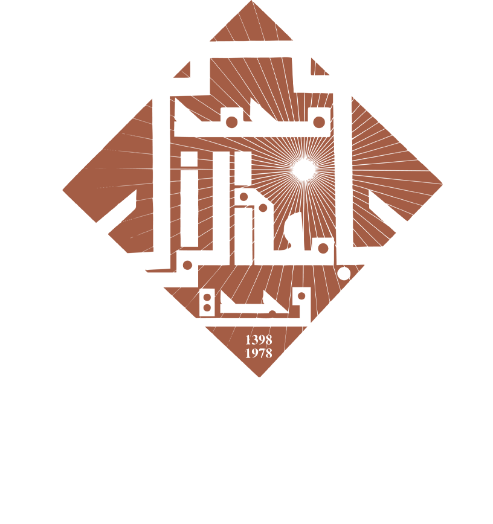
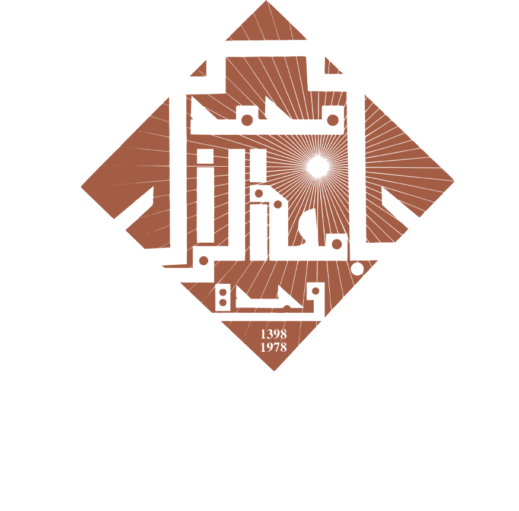

Questionner pour comprendre, instrumenter pour entreprendre
Intégrer l’intelligence artificielle générative (IAG), de manière critique, méthodique et responsable, dans les différentes étapes de la recherche scientifique.
Typologie élaborée par les autrices à partir de Messeri et Crockett (2024), Sabzalieva et Valentini (2023) et Khalifa et Albadawy (2024).
Remise à chaque participant pour prolonger l’atelier dans ses propres projets : tout est préparé et testé en amont par l’équipe d’animation.
Liens cliquables, fonctionnalités utiles au chercheur, conditions d’accès, points de vigilance, tutoriels et courtes vidéos de démonstration.
Un prompt par activité, structuré : rôle, contexte, tâche, ressources, contraintes, format de sortie et signalement des incertitudes.
Grille comparative, canevas du compagnon maïeutique, grille d’audit, grille de régulation et modèle d’IAgraphie.
Questionnaire, guide d’entretien, base quantitative et corpus qualitatif, conformes à la loi n° 09-08.
Supports et boîte à outils diffusés sous licence Creative Commons Attribution – Pas d’utilisation commerciale 4.0 International : partage et adaptation libres, en citant la source, à des fins non commerciales.
Capable de mobiliser l’IAG, d’en réguler les contributions et de justifier ses propres décisions scientifiques.